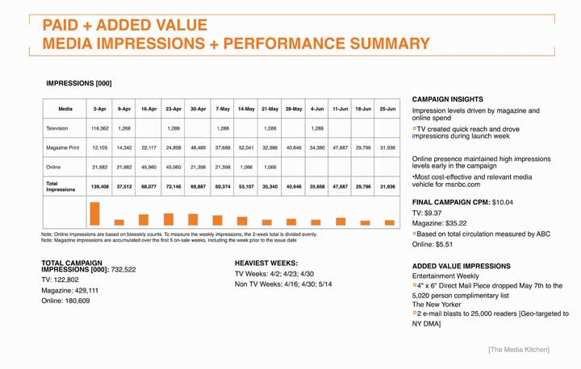

After studying this section, students should be able to do the following:
Advertising is “sexy,” no doubt. Especially in the “golden years” of the ad biz in the 1960s, as the hit TV series Mad Men depicts, it seems like the executives smoke and drink their way through the day while the poor souls in manufacturing or accounting do the heavy lifting. Anyone who actually works in advertising will readily tell you that the halo of glamour is a myth—but nonetheless that’s the stereotype many people (including some advertising and marketing majors) hold.
The reality is that advertising is hard work—and it’s an essential part of doing business. It’s also expensive. There’s no question (at least in our minds) that advertising returns considerable value to the client. But how do you prove that to the bean counters? Unlike most other areas of business, alas, it’s not always so easy to assess the value of advertising and marketing activities. How does the “warm and fuzzy” feeling an ad creates translate into cold hard cash on the bottom line?
As competition for sales, eyeballs, souls, or whatever unit is in play continues to escalate in virtually every category (both profit and nonprofit), advertisers are under pressure as never before to justify their existence. This challenge is compounded by the way a firm traditionally states its objectives: a marketing strategy typically uses vague goals like “increase awareness of our product” or “encourage people to eat healthier snacks.” These objectives are important, but their lack of specificity makes it virtually impossible for senior management to determine marketing’s true impact.
Because management may view these efforts as costs rather than investments, advertising is often the first item to be cut out of a firm’s budget when money is tight (like today). To win continued support for what they do (and sometimes to keep their jobs), advertisers are scrambling to prove to management that they generate measurable value by aligning what their work achieves with the firm’s overall business objectives.Jeff Lowe, “The Marketing Dashboard: Measuring Marketing Effectiveness,” Venture Communications, February 2003, http://www.brandchannel.com/images/papers/dashboard.pdf (accessed February 9, 2009); G. A. Wyner, “Scorecards and More: The Value Is in How You Use Them,” Marketing Research, Summer, 6–7; C. F. Lunbdy and C. Rasinowich, “The Missing Link: Cause and Effect Linkages Make Marketing Scorecards More Valuable,” Marketing Research, Winter 2003, 14–19. The watchword in business today is return on investment (ROI)The relationship between the amount of money spent and the amount of money gained by the company as a result of that expenditure.. In cold, hard terms: what did I spend, and what did I get in return?
(Gross Profit generated by advertising − Cost of advertising) / Cost of advertising = ROIFigure 14.2

msnbc.com measured the metrics of page views, unique visitors, and streaming video views; all increased significantly as a result of the campaign.
The race is on to generate metricsQuantifiable measures that gauge the direct impact of a marketing communication.—quantifiable measures that gauge the direct impact of a marketing communication. Businesses increasingly mandate that their divisions create scorecardsA checklist or chart, also known as a dashboard, that allows senior management to monitor the actions the firm is taking and how these actions affect the bottom line. (or “dashboards”) that allow senior management to monitor what actions they’re taking and to see how these efforts affect the bottom line. And they’re not just asking for proof that advertising moves products—increasingly they demand to see a link between tactical actions, such as specific promotions, on a firm’s market share and even on a firm’s overall financial value (as measured by market capitalization).Cf. Roland T. Rust, Tim Ambler, Gregory S. Carpenter, V. Kumar, & Rajendra K. Srivastava, “Measuring Marketing Productivity: Current Knowledge and Future Directions,” Journal of Marketing 68 (October 2004): 76–89.
This is no small task for advertisers, whose goals are often intangible and whose results may not be readily apparent in the next quarter. Another problem they face is the skepticism of many who hold the purse strings in companies; executives in other parts of the business may believe (rightly or wrongly) that a marketer never met a budget item she didn’t want. According to one study, six in ten financial executives believe their companies’ marketing departments have an inadequate understanding of financial controls, and seven in ten said their companies don’t use marketing inputs and forecasts in financial guidance to Wall Street or in public disclosures.
Marketers echo this pessimism; many acknowledge they have some distance to go before they understand (and quantify) the impact of what they do. In the same study, only one in ten marketer respondents said they could forecast the effect of a 10 percent cut in spending. Just 14 percent of marketing executives said senior management in their companies had confidence in their firms’ marketing forecasts. One of the analysts who conducted the study commented, “The thing that scared me most is that marketers don’t believe their numbers either.”Quoted in Bradley Johnson, “Survey Finds CFOs Skeptical of Their Own Firms’ ROI Claims: ANA Confronts Lack of Confidence at Marketing Accountability Conference,” Advertising Age, July 15, 2008, http://adage.com/article?article_id=129629 (accessed July 16, 2008).
The difficulties in quantifying marketing’s contribution to the bottom line—and the growing pressure from CEOs to do so—helps to explain why a recent BusinessWeek survey of the shelf life of top-level functional executives revealed that the average job tenure of a chief marketing officer (CMO)A company’s key executive responsible for achieving goals in all market segments. is the lowest among the areas—26 months, compared with 44 months for CEOs, 39 months for chief financial officers (CFOs), and 36 months for chief information officers (CIOs). The pressure to provide tangible results is intense.Ian Ayers, Super Crunchers: Why Thinking-by-Numbers Is the New Way To Be Smart (New York: Bantam, 2007); Jerry Adler, “Era of the Super Cruncher,” Newsweek, September 3, 2007, 42; “The Short Life of the Chief Marketing Officer,” BusinessWeek, December 10, 2007, 63–65.
So when a company looks to shave costs to improve its return to stockholders, advertising is a particularly easy target for cost cutting because few companies have developed reliable ways to track or predict the ROI for such spending. Lacking such measures, management often computes an advertising budget strictly as a percentage of revenues, or they base it on the previous year’s budget. As any fan of advertising’s impact (those who remain) can attest, this logic is seriously flawed: if revenues are falling, it may be because you’re not advertising enough! The last thing you want to do is reduce your investment to inform the market about your product or service.
How can advertisers make that case credibly? As we’ll see, it depends on the type of advertising they do and how they measure its results. Typical metrics for traditional advertising (i.e., magazine ads, TV, etc.) include these:
Sales volume: Did sales increase from the time period before the ad campaign to the time period after it? Warning: While it’s tempting to conclude that this is the only metric you need, this measure can be deceiving. You need to consider other factors:
A single best all-around ROI formula is the Holy Grail today, but in reality companies vary widely in the way they tackle this issue (the notable thing is that many are tackling it at all). Some rely on sophisticated statistical analyses while others are content to track general changes in sales trends or brand awareness. General Mills decides how much to invest in marketing and advertising by examining the historical performance of the brand as well as market research metrics on previous advertising effectiveness, growth versus competition, and other changes in the marketplace.
Another approach is to use the statistical technique called regression analysisStatistical technique that identifies the amount of an effect we can attribute to each of several variables operating simultaneously., which identifies the amount of an effect we can attribute to each of several variables that operate simultaneously. One analyst calculates the percent of total sales attributable just to a brand’s existing sales momentum and brand equityThe value of a brand name over and above the value of a generic product in the same category. (the value of a brand name over and above the value of a generic product in the same category). He determines brand equity by identifying the financial value the brand contributes compared to product value, distribution, pricing, services, and other factors. He calculates the short-term incremental impact of advertising on sales by looking at several years of sales data and creating a sales trend line. Waving his statistical magic wand, he then looks at whether a specific promotion results in incremental sales, or sales over what would we expect based on normal conditions.
Indeed, consulting firms such as Corporate Branding LLC and Interbrand, as well as a few big ad agencies like Young & Rubicam (Y&R), develop their own proprietary methods to arrive at a brand’s financial value. They track these values over time to help clients see whether their investments are paying off. Y&R’s Brand Asset Valuator is based on field research of consumers on thousands of brands. When the agency studied just what builds brand equity, it identified one crucial element: does the consumer believe the product is different in a relevant way—does the message offer a clear, memorable reason to buy the product, also known as a unique selling proposition (USP)A clear, memorable reason to buy the product.? Y&R tracks how well various advertising campaigns differentiate brands and the degree to which they increase brand value as a result.Kris Frieswick, “New Brand Day: Attempts to Gauge the ROI of Advertising Hinge on Determining a Brand’s Overall Value,” CFO.com, November 1, 2001, http://www.cfo.com/article.cfm/3001802/1/c_3046511 (accessed August 15, 2008).
The ROI for any campaign must relate to its original strategy. Every action the agency takes needs to tie back to the results it produced. As msnbc.com and SS+K planned out the elements of the campaign, the team aligned each element to one of the goals:
Then msnbc.com measured the ROI of the launch campaign with the following parameters:
Paid Media + Added Value: Media bought and negotiated added-valueExposure negotiated by the media buyer in a media buy; it can include extra pages, surveys, direct mail pieces, and other incentives for spending with a particular publication, site, or station..
Earned Media: Any coverage or impressions that are not paid for but are earned through commentary, press, and so forth.
Engagement: Measures of engagement include time spent on the site and number of clicks to show how the consumer interacted with the brand message.
Awareness: Measure of consumers’ knowledge of a brand, or of a particular communication. As we saw in Chapter 11 "Execute on All Platforms: SS+K Goes into Production Overdrive", when a consumer remembers a brand or message, this is recallViewers can remember and retell the specific marketing messages to which they were exposed.. If a consumer recognizes a brand or message from a list, this is recognitionViewers recognize the brand or message when they see or hear it again..
Traffic: Using sophisticated tracking software and code, analysts can track the number of people who visit a certain site or page on a site. Thanks to cookiesFiles that get inserted into computers by Web sites that tell Web site owners and advertisers who views that page. that get inserted into computers when we visit Web sites, repeat visits and other behavioral patterns can be uncovered as well.
These were the specific goals for the msnbc.com campaign and how they were measured:
Increase in engagement with the brand:
Figure 14.3 Total Impressions for Paid Media for the msnbc.com Campaign
Return on investment (ROI) is the Holy Grail for advertisers, who face increasing pressure to demonstrate that their efforts contribute tangibly to a client’s bottom line. Demonstrating this financial value is a challenge, especially in cases where a firm’s objectives are long term or hard to quantify—for example when the goal is to build a favorable image for a brand over the long haul. Firms employ a variety of metrics to gauge ROI, but there is as yet no single magic formula that works to everyone’s satisfaction.